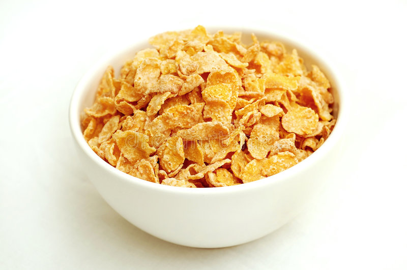

Cereal

Morning's best friend!
It's definitely wheat flakes and milk/milk alternative!
Ingredients
- Favorite cereal
- Milk or favorite milk alternative
Steps
- Grab bowl
- Pour cereal into bowl first. VERY IMPORTANT YOU DO THIS STEP FIRST!!
- Pour milk/milk alternative gracefully into bowl.
- Enjoy!
- Bonus tip: Eat the cereal flakes first then drink the milk/milk alternative after to get a yummy end to this dish!